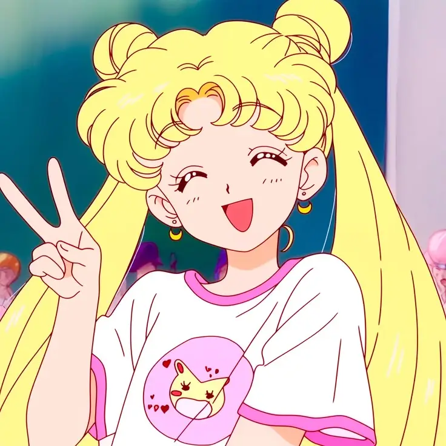

Walter, conocido en línea como "Aki Yusari" o "Walterex", es un apasionado desarrollador web y creador del proyecto Moon Center, una plataforma dedicada a ofrecer información detallada sobre anime, manga y videojuegos.
A sus 17 años, Walter ya ha comenzado a trazar su camino hacia convertirse en ingeniero en informática, con el objetivo de especializarse como desarrollador Fullstack.
Su sueño es estudiar en el Instituto Tecnológico de Buenos Aires (ITBA), el cual lo impulsa a superar desafíos con determinación y creatividad.
Amante de la programación, su lenguaje favorito es HTML, el cual utiliza a diario para dar vida a su proyecto. Walter busca constantemente la perfección en el diseño y la funcionalidad de sus páginas, combinando creatividad con lógica para brindar una experiencia única a los usuarios de Moon Center.
En su tiempo libre, Walter disfruta de la lectura de mangas como Aku no Hana, Sailor Moon y Neon Genesis Evangelion, obras que lo inspiran por sus reflexiones profundas y su impacto emocional. También participaba activamente en Neko's Club, donde se divertía coleccionando personajes de su gacha.
Su compromiso con el aprendizaje y la mejora continua lo lleva a explorar nuevos desafíos, como la creación de contenido en YouTube, donde promociona su proyecto y comparte su amor por el mundo otaku.
Además, tiene una fiel compañera llamada Persica, su gata, que siempre está a su lado mientras trabaja en sus proyectos.
Walter es un soñador decidido, con una visión clara de su futuro. Su dedicación y creatividad no solo lo hacen destacar en su campo, sino que también inspiran a quienes comparten su pasión por la tecnología y la cultura geek.
No solo incluye perfeccionar sus habilidades como desarrollador, sino también expandir su comunidad y seguir inspirando a otros a perseguir sus sueños.
Walter no solo ve Moon Center como un proyecto personal, sino también una plataforma para conectar con otros apasionados del mundo otaku. Cree firmemente en el poder de la colaboración y en cómo el apoyo mutuo puede llevar a la creación de algo extraordinario.

Para Walter, el crecimiento es un camino compartido, no una meta solitaria. Cada línea de código, cada video y cada conversación con su audiencia refuerzan su creencia de que los sueños solo se construyen con esfuerzo, humildad y apoyo mutuo.¿Te gustó este artículo? ❤️ Apoya Moon Center para más contenido como este.